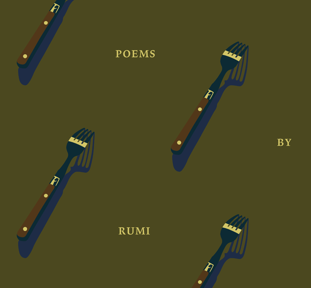
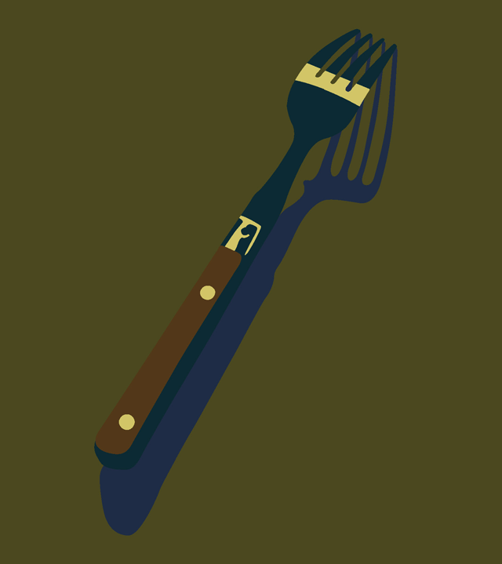
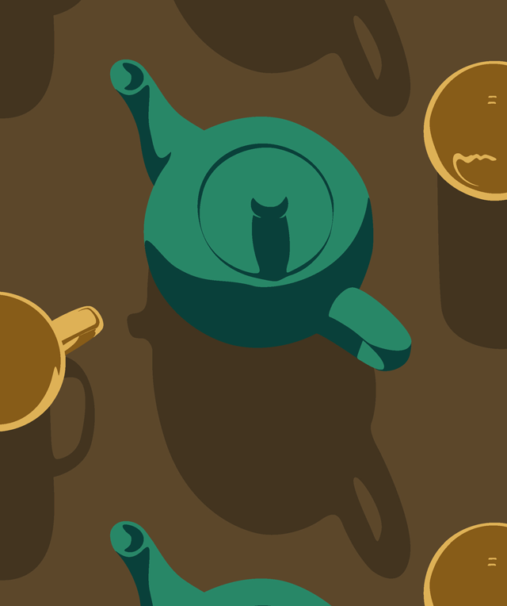
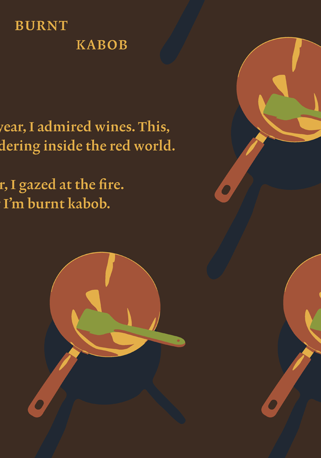

Poems by Rumi
A book with three illustrated spreads of poems by Rumi (1207–1273). In the history of Islamic and Jewish art alike, the prohibition against images of deities has evolved an oeuvre of pattern designs that reflect the infinity of the universe without making representations of holy figures. To present these poems, which use food as metaphor, I created patterns of kitchen utensils (how can you worship a teapot?) which illustrate key words. Replacing traditional geometric or vegetal motifs with household objects, I want to leave the reader considering Rumi’s words, keeping the poems alive and burning in their heart.
(11 ¾ × 13")


